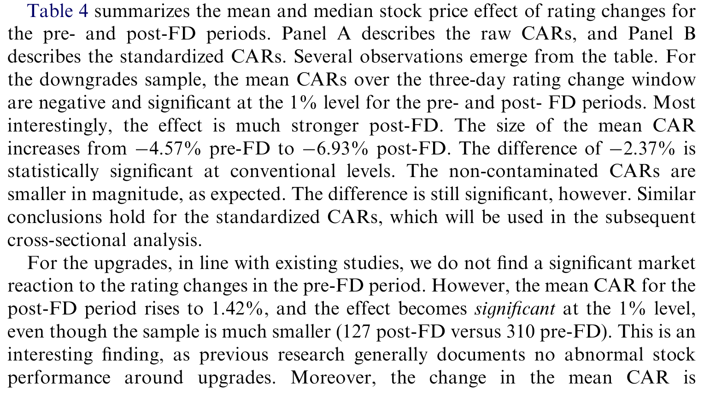
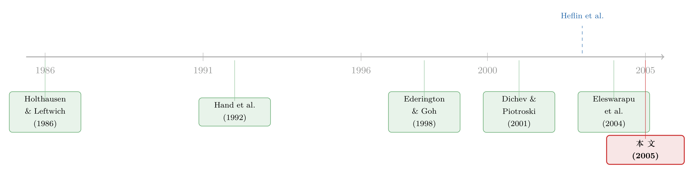

监管关上了一扇门，却忘了锁上评级机构那扇窗
本文读的是 Jorion, Liu & Shi (2005, JFE)：公平披露规则（Reg FD）禁止上市公司向分析师「开小灶」，却唯独豁免了信用评级机构。于是私下流动的信息没有消失，只是改换了门庭——作者用 1,767 次降级、437 次升级的股价反应证明，Reg FD 之后，评级变动的信息含量显著上升，降级时股价跌得更狠，而过去一向「无足轻重」的升级，第一次变得统计显著。
1 一个本该「变笨」的市场，为什么没有变笨？
2000 年 10 月 23 日，美国证券交易委员会（SEC）正式实施了公平披露规则 (Regulation Fair Disclosure, Reg FD)。规则的用意很朴素：上市公司如果要把重大的、非公开的信息透露给一小撮人，就必须同时向全市场公开。换句话说，那种把业绩风向悄悄说给几个相熟的卖方分析师听、让他们抢跑的做法，从此被定了性——这是「选择性披露」，是市场滥用。
听上去是件好事。可规则一出，骂声四起。批评者的逻辑也很直接：你把公司和分析师之间那条私下通气的暗线掐断，分析师拿不到料，预测质量就会下降，整个市场的信息环境会随之「贫瘠化」。一时间，「Reg FD 会让市场变笨」几乎成了华尔街的共识。
可真正有意思的事情发生了：市场并没有变笨。
Heflin、Subramanyam 和 Zhang（2003）很早就去查了账：Reg FD 之后，公司通过公开渠道披露的信息不降反升，盈余相关的披露数量翻了一倍还多；分析师预测的准确度也没有变差。更关键的一条证据是——他们用盈余公告前后的异常股价波动来度量「信息差」，发现这个缺口在 Reg FD 之后反而缩小了。Eleswarapu、Thompson 和 Venkataraman（2004）随后确认：整体的信息流动并未改变，逆向选择导致的交易成本甚至下降了。
这就构成了一个张力：监管明明掐断了一条私下通气的渠道，按理说信息会变少，可所有证据都指向「信息环境没有恶化」。那些原本要从分析师那条暗线流出去的信息，到底去哪儿了？
这正是 Jorion、Liu 和 Shi 这篇文章要回答的问题。而他们给出的答案，藏在 Reg FD 法条的一个不起眼的角落里。
2 被法律「网开一面」的那群人
Reg FD 的覆盖面其实很宽。规则 100(b)(1) 点名了四类不得被选择性披露的对象：券商及其关联人、投资顾问与机构投资经理、投资公司与对冲基金，以及任何「可合理预见会据此买卖证券」的持有人。简单说，凡是靠这条信息做投资决策的市场专业人士，统统在内。
但规则 100(b)(2) 又列了几项豁免。第三项，恰恰是信用评级机构：只要这些非公开信息是专为做出评级而收集、且评级最终向公众发布，那么公司把机密信息说给评级机构听，就不算违规。
SEC 当年给出的理由是：评级机构并不是在搞选择性披露，若不豁免，投资者反而会从评级里得到质量更差的信息。穆迪（Moody's）甚至辩称，这条豁免「不过是维持了原状（status quo ante）」。
这里藏着全文的「机关」。穆迪说豁免「维持了原状」，但作者敏锐地指出：相对而言，原状恰恰没有被维持。 因为别人（分析师）的那条暗线被掐断了，唯独评级机构这条暗线还开着。原本大家站在同一起跑线，现在评级机构独占了一个别人都没有的信息特权。
首先，把视角换一下：Reg FD 之后，评级机构的信用分析师手里握着的，是一批别的证券专业人士再也拿不到的机密信息。穆迪自己就说，「我们审慎处理敏感信息的能力，被绝大多数市场参与者高度看重」；惠誉（Fitch）说得更具体——「非公开信息常常包括预算、财务预测，以及并购这类重大公司事件的提前通报」。
那么，一个自然的问题是：既然评级机构垄断了这条私下信息通道，那它发布评级变动时，市场是不是应该听得比从前更认真？如果信息只是改换了门庭、而非真正消失，那评级这条渠道的信息含量，就应该在 Reg FD 之后上升。
这就是全文唯一的、被反复讲透的核心假设。
3 识别策略：把一次监管豁免当成准实验
怎么检验「评级变得更有信息了」？作者用的是金融学最经典的工具——事件研究 (event study)：盯住评级变动公告日前后的异常股价收益 (abnormal stock returns)，看看市场对这条消息的反应有多大。反应越大，说明这条评级里携带的、市场原先不知道的信息越多。
识别的骨架其实是一个「时间序列上的双重差分 (difference-in-differences, DiD)」思路：
- 处理（treatment）：Reg FD 的实施，是一个外生的制度冲击——一个明确的日期，2000 年 10 月 23 日。
- 前后两段：FD 前是 1998 年 8 月至 2000 年 9 月，FD 后是 2000 年 11 月至 2002 年 12 月，各 26 个月，刻意取得一样长，以便对比、也为了把样本做大。
- 被处理的对象：评级机构这条「豁免渠道」。如果信息真的从分析师那条暗线迁徙到了评级这条暗线，那么 FD 后评级变动的股价效应应当变强。
这套设计最讨巧的地方在于：评级机构是唯一在 Reg FD 之后还保留信息特权的群体。别的所有研究都在盯着分析师「失去了什么」，而这篇文章反过来，盯着那个「什么都没失去、甚至相对赚到了」的群体。这是一个被监管亲手制造出来的对照实验。
但真正关键的一步在于：怎么排除「这其实只是 2001 年经济衰退闹的」？ 毕竟全文只有一个事件日，FD 后正好撞上经济下行，降级数量本来就多（样本里 FD 后有 990 次降级，FD 前 777 次），股价反应大一点会不会只是宏观环境的锅？
作者用了两道防线。第一，把经济衰退当作控制变量放进回归，结论不变。第二，也是更有说服力的一招——横截面证据：他们发现 FD 的信息效应，在分析师覆盖更多、规模更大的公司里更明显。这恰恰呼应了识别逻辑：正是这些大公司、明星公司，当年最有动机去给分析师「开小灶」以换取吹捧，因此也最该在 Reg FD 之后受到冲击。一个单纯的衰退故事，是讲不出「为什么偏偏是分析师多的公司反应更大」的。
这是事件研究里对付「单一事件日」这一软肋的标准打法：时间序列上的对比容易被同期事件污染，于是再叠一层横截面的异质性——如果效应沿着一条与你的机制相符、却与替代解释无关的维度变化，可信度就上了一个台阶。
4 数据：1,767 次降级，437 次升级
作者从 Mergent 固定收益证券数据库（FISD）取评级变动数据。这个库收录了超过 9 万只公司债、机构债与国债，评级覆盖 S&P、穆迪、惠誉，最早可追溯到 1995 年 4 月。样本限定在美国国内应税公司债，剔除扬基债与私募债；同一发行人同一天若有多只债券被调级，只保留调整幅度最大的那一只。
最终样本：1,767 次降级，437 次升级——降级与升级约为 4:1，这个比例与既有研究一致（债券往往以高评级发行，此后一路往下漂）。约 90% 来自穆迪和 S&P，剩下 10% 是惠誉。
评级被转换成一个 23 级的基数变量（cardinal scale）：AAA 记为 1，AA+ 记为 2，一直到违约 D 记为 23。这样「调级幅度」就成了新评级基数减旧评级基数，干净可比。
数据上还有一处细节值得点名：信息污染（contamination）。评级变动若恰好和公司其他重大新闻撞在一起，股价反应就分不清是谁引起的。作者一方面剔除了原因标注为「并购」「市场状况」的样本，另一方面用《华尔街日报》（WSJ）摘要做了更严的检验——若事件日前后三天窗口内出现任何公司特定的价格相关新闻，就判为「被污染」。结果如表所示，降级样本 FD 前后被污染的比例分别约为 22% 和 25%，升级为 14.5% 和 18.9%，差异在统计上都不显著（Z 值分别为 1.28 和 1.14）。这一点很重要：污染程度在前后两段几乎一样，就不会系统性地偏掉 Reg FD 这个系数。顺带一提，「干净样本」里剔除了安然和世通这两桩惊天降级。
5 主要结果：升级第一次「开口说话」
现在回到那个核心假设。先看历史给的「基准线」。
过去几十年，评级变动的股价效应有一个非常稳定、也非常不对称的规律：降级有用，升级没用。
- Holthausen 和 Leftwich（1986）用 1977–1982 年穆迪和 S&P 的 1,014 次评级变动，发现降级的两日异常收益是
−2.66%，又大又显著；而升级只有+0.08%，统计上不显著。 - Dichev 和 Piotroski（2001）把样本扩到穆迪 1970–1997 年的 4,727 次变动，得到三日效应：降级
−1.97%、升级+0.48%。升级在这个大样本里勉强显著了，但量级仍远小于降级。
为什么会有这种不对称？一种解释是，公司乐于主动释放好消息、却不情愿吐露坏消息，于是评级机构的增量信息天然偏向负面（Ederington 和 Goh, 1998）；另一种解释是评级机构本就把更多资源花在嗅探信用恶化、而非改善上。无论哪种，「升级不值钱」几乎成了这一文献的铁律。
于是反转出现了。Jorion、Liu 和 Shi 的发现是：相对于 Reg FD 之前，降级带来的股价跌幅更大了，升级带来的股价涨幅也更大了——而且升级第一次变得统计显著。表 4 汇总了这一升降级股价效应在 FD 前后的对比。

Table 4: summarizesthe mean and median stock price effect of rating changes for
请体会这个结果的分量。一个在过去近二十年、跨越数千个观测都「死活不显著」的升级效应，在 Reg FD 这条制度线之后突然「开口说话」了。这不是降级效应顺手变大的副产品，而是直接命中假设的核心：如果评级机构真的因为豁免而独占了机密信息，那么它发布的所有评级变动——无论好坏——都该携带更多增量信息。升级的「复活」，正是这条机制最干净的指纹。
把横截面那一层叠上去，故事就闭环了：效应在分析师多、规模大的公司里更强。这些公司当年最依赖给分析师「喂料」来维持人气，Reg FD 一刀切断了这条路，于是评级这条幸存的暗线，在它们身上显得格外金贵。
（关于「价格本身会不会反过来教评级机构、以及评级到底在向市场传递什么」，可参见《当价格在说谎：评级机构凭什么「看穿」市场的噪声》；而把评级看作一种"让大家相信同一句话"的协调装置，则可参见《评级的真正力量，不在「说真话」，而在「让大家信同一句话」》。）
6 文献脉络
这篇文章站在两条研究河流的交汇处。
一条河，是评级变动的信息含量。源头是 Holthausen 和 Leftwich（1986）那篇经典的事件研究，确立了「降级显著、升级不显著」的不对称基准；Hand、Holthausen 和 Leftwich（1992）把它推广到债券价格上，发现债市反应更弱（也许是公司债价格数据质量较差）；Ederington 和 Goh（1998）则从盈余的角度解释了这种不对称的来源；Dichev 和 Piotroski（2001）用更大的样本重做，确认了规律的稳健。这条河流到 2005 年，一直缺一个能让「升级也显著」的外生冲击。
另一条河，是 Reg FD 与信息环境。Heflin 等（2003）和 Eleswarapu 等（2004）几乎同时给出了那个反直觉的结论：Reg FD 之后信息环境没有恶化，信息不对称甚至下降了。但他们留下了一个悬而未决的问题——那些被掐断的私下信息，究竟流去了哪条渠道？

Jorion、Liu 和 Shi 的贡献，恰恰是把这两条河接在了一起：他们指出评级机构正是 Reg FD 之后主要的选择性披露管道，并用第一条河的工具（评级事件研究），去回答第二条河的问题（信息流向哪里）。升级效应的「复活」，既补全了评级文献里缺的那块拼图，也为「信息环境为何没恶化」提供了一个具体的、可检验的渠道。
7 评论与延伸（Q&A + 研究方向）
(a) 几个可能的疑问
Q：只有一个事件日，凭什么相信这是 Reg FD 的功劳，而不是 2001 年衰退？
这是全文最大的软肋，作者也坦承「像所有 Reg FD 研究一样，效应可能是巧合」。两道补救：一是把衰退作为控制变量后结论不变；二是横截面证据——效应沿「分析师覆盖/公司规模」变化，而这是单纯衰退故事解释不了的。后者比前者有力得多，但仍不是随机实验级别的识别。
Q：降级效应变大，会不会只是因为 FD 后降级幅度更大、或更"脏"了？
作者专门堵了这两个口。调级幅度在前后两段非常稳定（降级平均约 1.69 级，升级约 1.32 级，几乎不变）；污染比例前后差异也不显著（Z 值 1.28 与 1.14）。所以幅度和污染都不像是驱动因素。
Q：升级从不显著到显著，是不是只是样本变大、检验功效（power）上去了？
不太可能是纯功效问题。FD 后升级样本其实更小（127 次 vs. FD 前 310 次），按理功效更低却反而显著，这与「样本变大才显著」的逻辑正好相反，反而强化了"信息含量真的上升"的解读。
Q：评级机构拿到机密信息，为什么 SEC 还说豁免"维持了原状"？
SEC/穆迪的逻辑是站在评级机构自身看——它一直都能拿到这些料，确实"原状未变"。作者的反驳是站在相对视角：别人的暗线被剪了，唯独评级机构没被剪，相对地位因此跃升。这正是把"豁免"当准实验的立足点。
Q：这和「机构投资者抢跑消息」是一回事吗？
不完全是。那类研究（如《财报还没发，机构已经站好了队》）问的是谁在公告前就知情并交易；这篇问的是公开的评级公告本身在 Reg FD 后是否携带更多信息。前者是私下交易的知情度，后者是公开信号的信息含量。
Q：评级机构既然信息更值钱了，会不会反而更容易被滥用（利益冲突）？
本文没回答，但这是个自然的延伸。2005 年的这篇文章关注的是"信息含量上升"这件好事；而 2008 年后大量文献开始关注评级机构的激励扭曲——信息特权与利益冲突，恰是一枚硬币的两面（可参见《评级注水，错的真是「谁付钱」吗？》）。
(b) 几个可能的研究问题与提案
1. 把镜头从股市搬到公司债市场。 【经济故事】本文用的是股价反应，但评级最直接的标的是债券。Hand 等（1992）当年发现债市对评级变动反应更弱，疑因价差数据噪声大。如今有了 TRACE 的逐笔成交，能不能重做这个 FD 前后的对比，看评级信息含量上升是否同样体现在信用利差与债券流动性上？ 【可行性】高。TRACE 自 2002 年起覆盖，可惜恰好错过 FD 前的窗口，需要用更早的报价数据（如 Bloomberg/IDC）拼接 1998–2000 段，识别同本文。难点在前段债券价格质量，但设计是现成的。
2. 外资持有人是另一条"被豁免的暗线"吗？ 【经济故事】Reg FD 是美国规则。跨境上市公司、或同时受外国监管的发行人，其私下信息渠道未必被同等掐断。能否用"受 FD 约束程度"的横截面差异（如 ADR 层级、外资持股比例），构造一个更干净的处理/对照对比？ 【可行性】中。需要 FISD/CRSP 合并外资持股（13F、Thomson）与跨境上市信息，识别靠"受规则约束强弱"的差异。挑战是外资持股本身内生于公司质量，需用可投资度变化等工具来净化。
3. 升级效应的"复活"在 2008 危机后是否逆转？ 【经济故事】本文样本止于 2002 年。金融危机重创评级机构声誉，监管（Dodd-Frank、降低对 NRSRO 的依赖）也在削弱评级的"监管牌照"价值。那么"升级显著"这件事是昙花一现，还是长期成立？ 【可行性】高。把样本延伸到 2008、2012、2020 几个子区间，重做同一事件研究即可，数据现成。能直接说清这是制度性的还是周期性的现象。
4. 把横截面机制做到极致：用分析师覆盖的外生变化。 【经济故事】本文已发现效应随分析师覆盖变化。能否更进一步，用券商合并/关闭导致的分析师覆盖外生下降（如 Hong & Kacperczyk 式的冲击），检验"覆盖骤减"是否让评级信息含量进一步上升？ 【可行性】中高。券商合并事件可识别覆盖的外生变动，与评级事件研究叠加。难在两类事件的时间对齐与样本量，但识别逻辑干净。
8 我的判断与参考文献
贡献。 这篇文章最漂亮的地方，是把一条几乎人人忽略的法律豁免，变成了一个准实验。它没有用花哨的计量，就用最朴素的事件研究，回答了一个本来很难回答的宏观问题——"被监管掐断的私下信息去哪了"。而"升级效应的复活"是一个意料之外、却恰好命中假设的结果：你很难为它编一个别的故事。在评级被巴塞尔资本框架越来越倚重的当口，这个发现也有现实分量。
对识别的担忧。 软肋始终是那个"只有一个事件日"。横截面证据很有说服力，但它证明的是"效应与分析师覆盖相关"，并不能完全排除"分析师覆盖多的公司在衰退中本就反应更剧烈"这类共变。我会更想看到一个把受 FD 约束强弱直接做成处理/对照的设计（比如某些发行人因结构原因不受规则约束），那才是真正意义上的双重差分。此外，全文用的是股价而非债价，而评级最本源的标的是债——这条最直接的检验，反而留给了后人。
后续想看什么。 三件事：把检验搬到公司债的信用利差与流动性上；把样本延长到危机后，看升级效应是制度性的还是周期性的；以及，给"信息含量上升"配一个福利账本——评级机构独占信息特权，究竟是改善了价格发现，还是只是把租金从分析师手里搬给了评级机构？
参考文献
Dichev, I. D., Piotroski, J. D. (2001). The long-run stock returns following bond ratings changes. Journal of Finance 56(1), 173–204.
Ederington, L. H., Goh, J. C. (1998). Bond rating agencies and stock analysts: who knows what when? Journal of Financial and Quantitative Analysis 33(4), 569–585.
Eleswarapu, V., Thompson, R., Venkataraman, K. (2004). The impact of regulation fair disclosure: trading costs and information asymmetry. Journal of Financial and Quantitative Analysis 39(2), 209–225.
Hand, J., Holthausen, R., Leftwich, R. (1992). The effect of bond rating agency announcements on bond and stock prices. Journal of Finance 57(2), 733–752.
Heflin, F., Subramanyam, K. R., Zhang, Y. (2003). Regulation FD and the financial information environment: early evidence. Accounting Review 78(1), 1–37.
Holthausen, R. W., Leftwich, R. W. (1986). The effect of bond rating changes on common stock prices. Journal of Financial Economics 17(1), 57–89.
Jorion, P., Liu, Z., Shi, C. (2005). Informational effects of regulation FD: evidence from rating agencies. Journal of Financial Economics 76(2), 309–330.